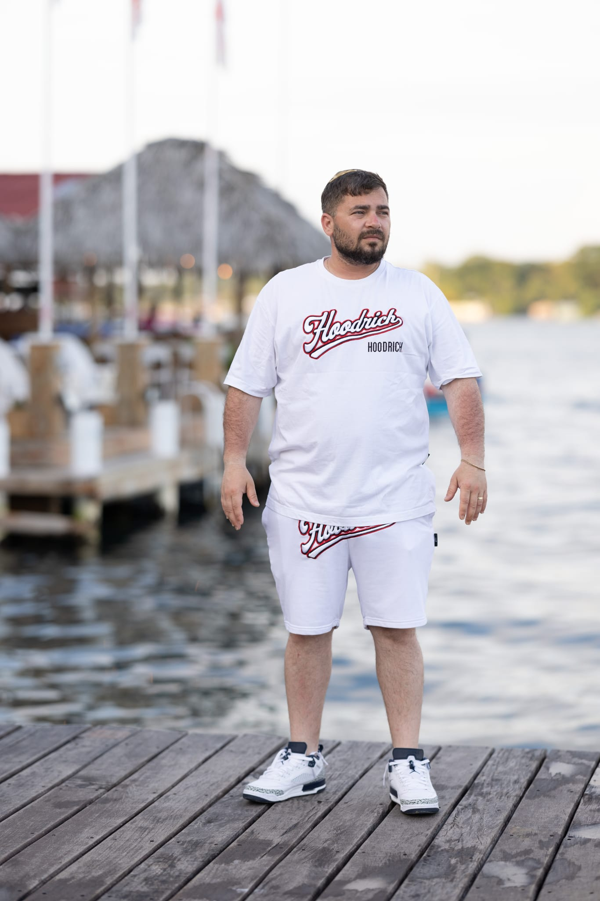
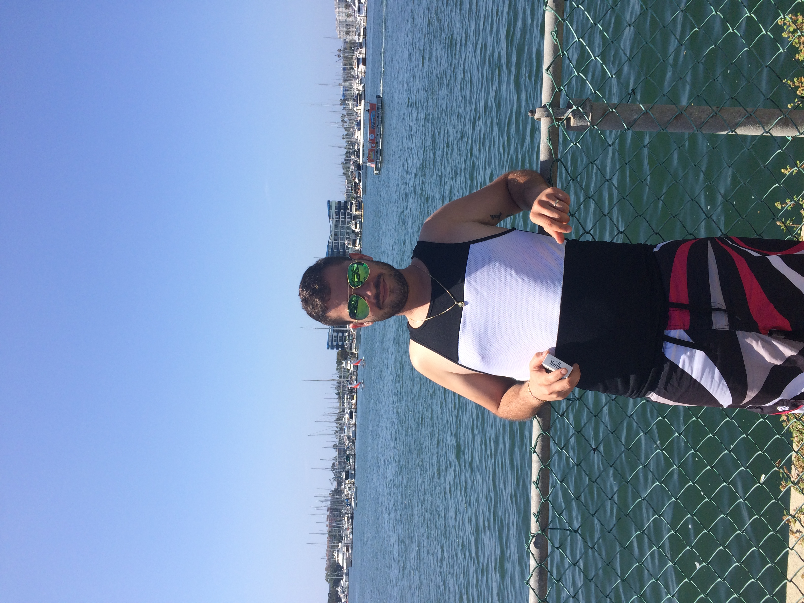

הטיול של ישראל
מסע של חוויות, טבע ורגעים בלתי נשכחים
קצת עליי
אני ישראל בוגנים, בן 35, עובד בחברה שמייצרת להבים למטוסים — אבל הלב שלי תמיד היה באוויר הפתוח. אני מטייל כדי לצלם רגעים יפים ומרגשים, לפגוש אנשים חדשים ולגלות עולמות חדשים. הטיול הזה היה מתנה לעצמי לקראת סיום לימודי ההנדסאות — מסע מרגש, מצחיק והרפתקני, שבו טבע פוגש תרבות, חיות חדשות וחוויות חדשות. כשאני לא מטייל, תמצאו אותי משחק פינג פונג, באולינג, או מתכנן את ההרפתקה הבאה.

